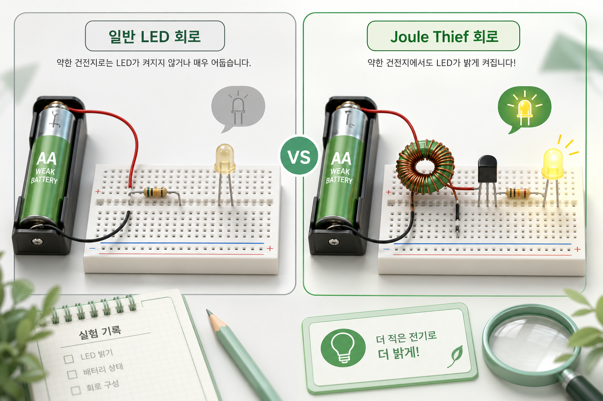
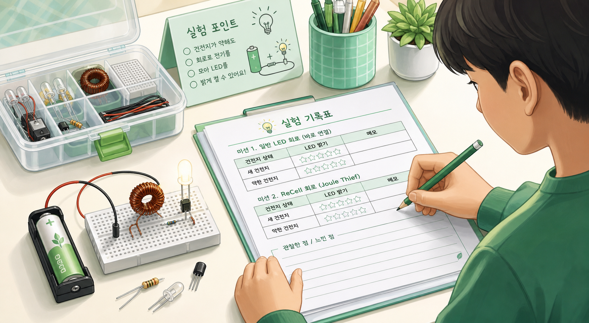

미션 1
약한 AA 건전지를 일반 LED 회로에 연결하고 LED가 켜지는지 관찰합니다.
실험 미션
일반 LED 연결과 Joule Thief 회로를 비교하면서, 낮은 전압을 다루는 회로 설계의 의미를 직접 관찰합니다.

약한 AA 건전지를 일반 LED 회로에 연결하고 LED가 켜지는지 관찰합니다.
같은 건전지를 Joule Thief 회로에 연결하고 LED 밝기를 비교합니다.
새 건전지와 약한 건전지를 바꿔 끼우며 차이를 기록합니다.
코일 방향 또는 감은 수가 바뀌면 결과가 어떻게 달라지는지 관찰합니다.
왜 일반 연결에서는 안 켜졌는데 Joule Thief 회로에서는 켜질 수 있을까요?
결과를 사진과 기록표로 남기면 발표 자료에 바로 활용할 수 있습니다.

기록은 현재 사용하는 기기에만 저장됩니다.